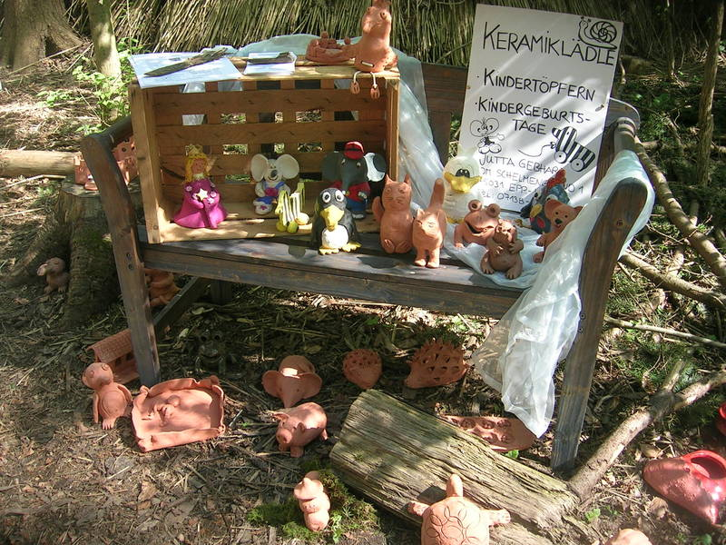
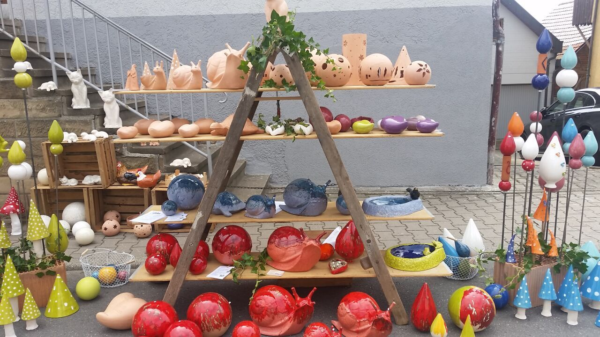

Runterkommen und Alltagsstress abbauen.
Emotionalen, körperlichen und geistigen Stress abbauen.
Zeit vergessen.

Töpfern fördert die Kreativität und regt die Phantasie an.
Es regt alle Sinne an. Entwickelt die Feinmotorik und Fingerfertigkeit..
Töpfern ist der perfekte Ausgleich.

Kontakt. Anfahrt.
Im Schelmengrund 1
75031 Eppingen - Kleingartach
Tel. 07138 / 67130
E-Mail: gebhard.jutta@gmail.com
Bitte direkt vor der Töpferwerkstatt oder auf den öffentlichen Parkplätzen parken und nicht in den Hofeinfahrten der Nachbarn wenden.